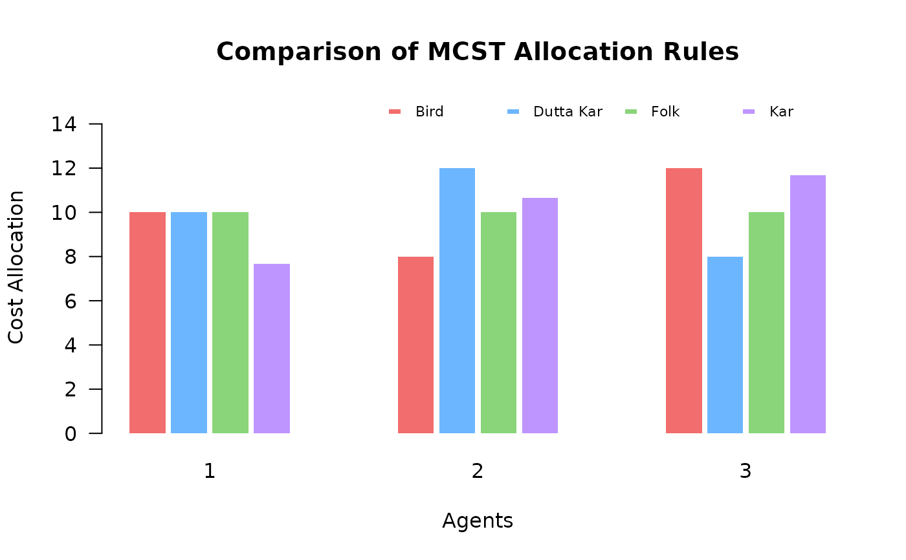

This function computes and compares the cost allocations for a minimum cost spanning tree (MCST) problem using four standard rules: Bird, Dutta-Kar, folk, and Kar.
Usage
mcstCompare(C)
# S3 method for class 'mcstp_compare'
plot(x, titles = TRUE, ...)Value
A data frame containing the allocations for each agent under the Bird, Dutta-Kar, folk, and Kar rules.
See also
mcstBird, mcstDuttaKar, mcstFolk, mcstKar for the rule definitions.
mcstRules for an overview of the available rules and analysis tools in the package.
Examples
# Matrix input
C_mat <- matrix(c(0, 10, 15, 20,
10, 0, 25, 12,
15, 25, 0, 8,
20, 12, 8, 0), byrow = TRUE, ncol = 4)
# Compare all rules
comparison <- mcstCompare(C_mat)
comparison
#> ----------------------------------
#> MCST Allocation Rules Comparison
#> ----------------------------------
#> agent bird dutta_kar folk kar
#> 1 10 10 10 7.7
#> 2 8 12 10 10.7
#> 3 12 8 10 11.7
# Plot the comparison
plot(comparison)
